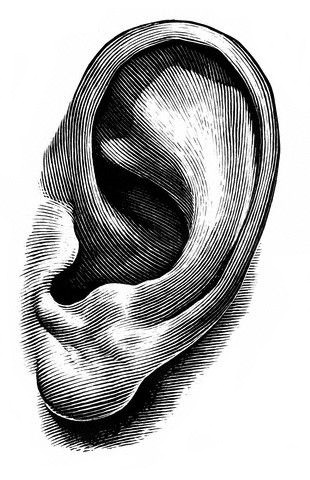

SECRET
(famille)
"Aucun mortel ne peut garder un secret. Si les lèvres restent silencieuses, ce sont les doigts qui parlent. " Sigmund FREUD
Le secret est une information, ou un savoir qui se trouve soit caché soit inaccessible. Lié au problème de la connaissance et de l'initiation, il est souvent synonyme de mystère et enveloppe l'inaccessibilité avec une aura parfois irrationnelle en génèrant pleinement du fantasme. Il inclut le partage et désigne ainsi des complices, lorsque les confidenciers deviennent les porteurs du non-dit.
Pour comprendre ce processus, nous devons rompre avec un certain nombre d'erreurs qui entourent la notion de secret. Tout d'abord, un secret n'est pas seulement quelque chose que l'on ne dit pas, puisque nous ne disons bien entendu pas tout et à tout moment. Il porte à la fois sur un contenu qui est caché et sur un interdit de dire, voire de comprendre, qu'il puisse y avoir quelque chose qui fasse l'objet d'un secret. En outre, dans leur grande majorité, les secrets ne sont pas organisés autour d'événements coupables ou honteux comme on le croit souvent.
Le secret par son mutisme est une dialectique à part entière car on exprime pleinement à travers le silence. Ce silence structuré autour de la rétention d'une connaissance fait office de liant, il soude les individus porteurs du message mutique. Il a alors cet utilité d'unification, il a également cette limite d'emprisonner par la confidence. Il y a quelque chose de l'ordre de l'intime.
Un des plus riches exemples est le secret de famille qui est un savoir commun mais que l’on ne partage pas avec les autres membres de la tribu. Nul ne sait jamais qui sait quoi exactement. Aussi, il crée une dynamique particulière au sein du groupe et peut engendrer des conflits familiaux et individuels, qui se répercutent sur plusieurs générations. Toutes les familles abritent des secrets. Petits ou grands, ils ont toujours des conséquences. Leur gravité réside dans l’importance du secret, mais aussi dans l’insistance mise en œuvre pour le préserver.
Quand le clan familial s’impose le silence sur un événement, communiquer devient finalement impossible. C’est ainsi que, porteurs de nos passés occultés, de nos bouts de mémoire manquants, les secrets de famille deviennent les maîtres silencieux de nombreux destins.
Les secrets vont se trouver, de ce fait, confrontés à de grandes difficultés. Le porteur leur manifeste des émotions, des sensations et des états du corps en relation avec une expérience forte, mais sans pouvoir leur confirmer la nature de ce qu'il éprouve et encore moins leur en expliquer la raison. Ses attitudes et ses gestes peuvent notamment entrer en contradiction avec les mots qu'il prononce, mais aussi entre eux, et être même parfois totalement déplacés par rapport à la situation.
Les contenus des secrets de famille touchent essentiellement la mort, les origines, la sexualité, la stérilité, le divorce, la maladie mentale, le handicap, les transgressions morales et/ou juridiques, les revers de fortune ou ce qui peut entacher l’image qu’une famille a d’elle-même, tout ce qui n’aurait jamais dû exister, tout ce dont on a honte, et la honte c'est la peur du regard de l'autre.
Le " secret des secrets ", c’est l’inceste. Mais on dissimule aussi la double vie de papa, l’homosexualité de tonton… Des parents n’acceptant pas leur stérilité tairont à leur enfant qu’il est né par insémination artificielle, ou qu’il a été adopté. Par souci de respectabilité, on ne racontera pas que le petit dernier est un enfant adultérin. On cachera l’existence de tante Adèle, qui s’est déroulée entre les murs d’un hôpital psychiatrique. Autrefois, on rayait purement et simplement de l’arbre généalogique les enfants morts en bas âge.
Pour comprendre ce processus, nous devons rompre avec un certain nombre d'erreurs qui entourent la notion de secret. Tout d'abord, un secret n'est pas seulement quelque chose que l'on ne dit pas, puisque nous ne disons bien entendu pas tout et à tout moment. Il porte à la fois sur un contenu qui est caché et sur un interdit de dire, voire de comprendre, qu'il puisse y avoir quelque chose qui fasse l'objet d'un secret. En outre, dans leur grande majorité, les secrets ne sont pas organisés autour d'événements coupables ou honteux comme on le croit souvent.
Le secret par son mutisme est une dialectique à part entière car on exprime pleinement à travers le silence. Ce silence structuré autour de la rétention d'une connaissance fait office de liant, il soude les individus porteurs du message mutique. Il a alors cet utilité d'unification, il a également cette limite d'emprisonner par la confidence. Il y a quelque chose de l'ordre de l'intime.
Un des plus riches exemples est le secret de famille qui est un savoir commun mais que l’on ne partage pas avec les autres membres de la tribu. Nul ne sait jamais qui sait quoi exactement. Aussi, il crée une dynamique particulière au sein du groupe et peut engendrer des conflits familiaux et individuels, qui se répercutent sur plusieurs générations. Toutes les familles abritent des secrets. Petits ou grands, ils ont toujours des conséquences. Leur gravité réside dans l’importance du secret, mais aussi dans l’insistance mise en œuvre pour le préserver.
Quand le clan familial s’impose le silence sur un événement, communiquer devient finalement impossible. C’est ainsi que, porteurs de nos passés occultés, de nos bouts de mémoire manquants, les secrets de famille deviennent les maîtres silencieux de nombreux destins.
Les secrets vont se trouver, de ce fait, confrontés à de grandes difficultés. Le porteur leur manifeste des émotions, des sensations et des états du corps en relation avec une expérience forte, mais sans pouvoir leur confirmer la nature de ce qu'il éprouve et encore moins leur en expliquer la raison. Ses attitudes et ses gestes peuvent notamment entrer en contradiction avec les mots qu'il prononce, mais aussi entre eux, et être même parfois totalement déplacés par rapport à la situation.
Les contenus des secrets de famille touchent essentiellement la mort, les origines, la sexualité, la stérilité, le divorce, la maladie mentale, le handicap, les transgressions morales et/ou juridiques, les revers de fortune ou ce qui peut entacher l’image qu’une famille a d’elle-même, tout ce qui n’aurait jamais dû exister, tout ce dont on a honte, et la honte c'est la peur du regard de l'autre.
Le " secret des secrets ", c’est l’inceste. Mais on dissimule aussi la double vie de papa, l’homosexualité de tonton… Des parents n’acceptant pas leur stérilité tairont à leur enfant qu’il est né par insémination artificielle, ou qu’il a été adopté. Par souci de respectabilité, on ne racontera pas que le petit dernier est un enfant adultérin. On cachera l’existence de tante Adèle, qui s’est déroulée entre les murs d’un hôpital psychiatrique. Autrefois, on rayait purement et simplement de l’arbre généalogique les enfants morts en bas âge.

Le secret de famille nuit à la transmission intergénérationnelle, il resurgit donc par des symptômes touchant la communication. Le secret transpire par le biais d’attitudes étranges ou anxieuses, par des petites phrases équivoques, des mimiques, les voix qui s’altèrent dès qu’un mot, un nom rappelant le drame caché est prononcé. Autant de micro comportements qui parlent à l’inconscient indiquant qu’il y a du secret dans l’air… mais aussi de la souffrance.
D’ailleurs, les symptômes, les conduites pathologiques qu'il génère sont autant de tentatives communicationnelles inadaptées pour tenter d'exprimer, de soigner la famille baillonée et mettre fin au malheur tribal. On constate aussi qu’un même secret ne touche pas de façon identique les membres de la fratrie.
Pour anihiler le secret, les générations suivantes adoptent parfois des conduites aux antipodes de ceux des ancêtres. Un exemple : une femme s’est fait engrosser, pendant la Première Guerre, par un soldat qui a disparu dans la nature. Le fils était donc un enfant illégitime. Pour éviter la naissance d’autres enfants illégitimes, plusieurs des descendants ont opté, sans savoir pourquoi, pour l’absence de sexualité.
Le secret suinte à travers des difficultés de communication sur le plan émotionnel. Il est fréquent que l’individu ait tendance à fuir dans l’imaginaire, à frôler la mythomanie, à croire à priori que l’autre ment ou lui dissimule l’essentiel. L’intimité lui pose problème : il a du mal à trouver la bonne distance. Soit il est trop intrusif, soit il est trop distant, peu curieux d’autrui au point de paraître indifférent.
Le secret n'est pas un tabou mais une rétention qui transperce souvent, à l’insu de son détenteur, à travers des mimiques, des gestes retenus (les actes manqués), des postures signalant l’embarras, dès qu’une scène, une image, une histoire ou un simple mot s’en approche de trop près.
Dès lors que nous ne nous sentons plus gardien mais prisonnier d’un secret, il nous faut trouver le moyen de le dire, avec les mots et le ton justes. Parce que ce secret, quel qu’il soit, nous ne pourrons pas le garder pour nous et est une limite à la progression de vie. Il n'offre que le sacrifice.
D’ailleurs, les symptômes, les conduites pathologiques qu'il génère sont autant de tentatives communicationnelles inadaptées pour tenter d'exprimer, de soigner la famille baillonée et mettre fin au malheur tribal. On constate aussi qu’un même secret ne touche pas de façon identique les membres de la fratrie.
Pour anihiler le secret, les générations suivantes adoptent parfois des conduites aux antipodes de ceux des ancêtres. Un exemple : une femme s’est fait engrosser, pendant la Première Guerre, par un soldat qui a disparu dans la nature. Le fils était donc un enfant illégitime. Pour éviter la naissance d’autres enfants illégitimes, plusieurs des descendants ont opté, sans savoir pourquoi, pour l’absence de sexualité.
Le secret suinte à travers des difficultés de communication sur le plan émotionnel. Il est fréquent que l’individu ait tendance à fuir dans l’imaginaire, à frôler la mythomanie, à croire à priori que l’autre ment ou lui dissimule l’essentiel. L’intimité lui pose problème : il a du mal à trouver la bonne distance. Soit il est trop intrusif, soit il est trop distant, peu curieux d’autrui au point de paraître indifférent.
Le secret n'est pas un tabou mais une rétention qui transperce souvent, à l’insu de son détenteur, à travers des mimiques, des gestes retenus (les actes manqués), des postures signalant l’embarras, dès qu’une scène, une image, une histoire ou un simple mot s’en approche de trop près.
Dès lors que nous ne nous sentons plus gardien mais prisonnier d’un secret, il nous faut trouver le moyen de le dire, avec les mots et le ton justes. Parce que ce secret, quel qu’il soit, nous ne pourrons pas le garder pour nous et est une limite à la progression de vie. Il n'offre que le sacrifice.
EN RELATION

TRANS MUER
AUTHENTICITE
CROYANCE

LEGITIMITE
TRANSE GENERATION
TRAHISON